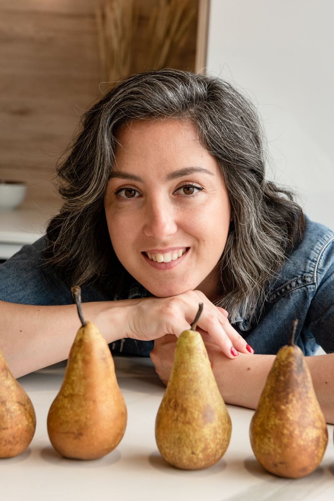
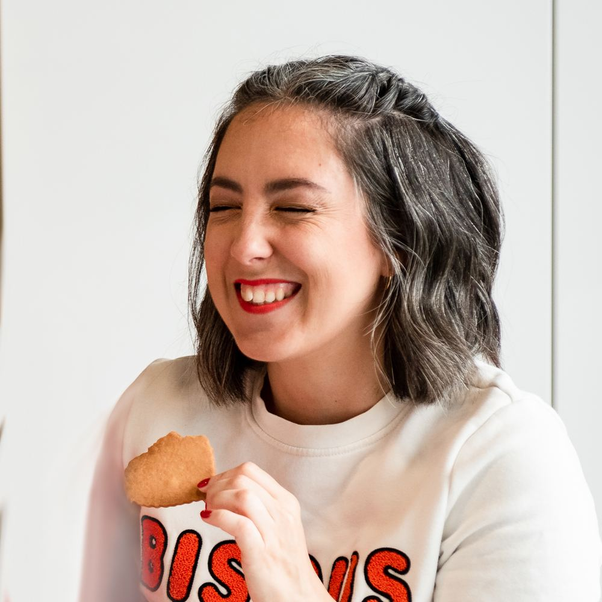
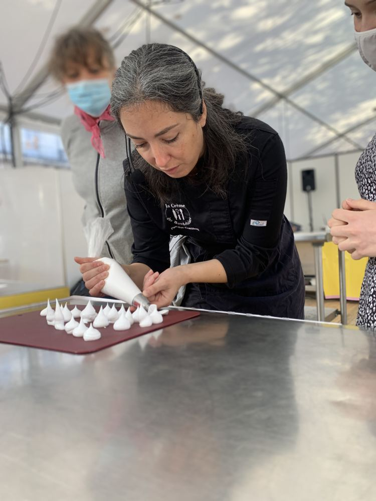
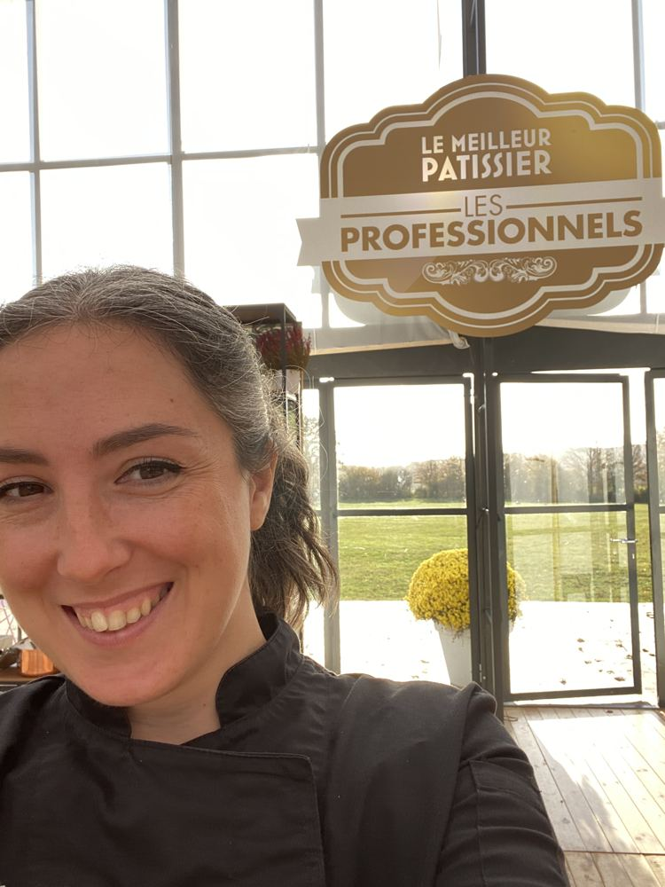
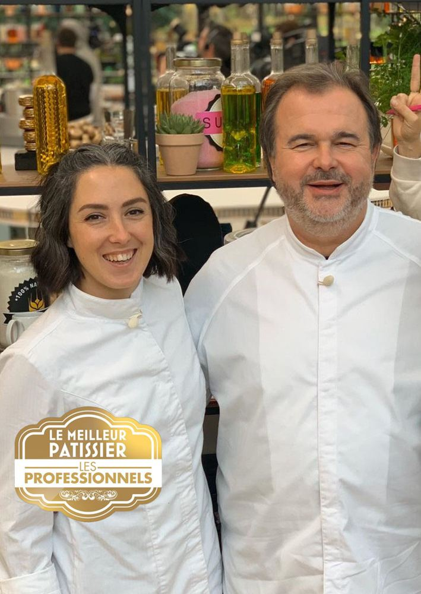
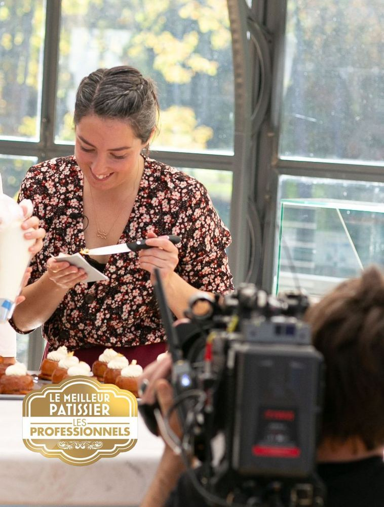
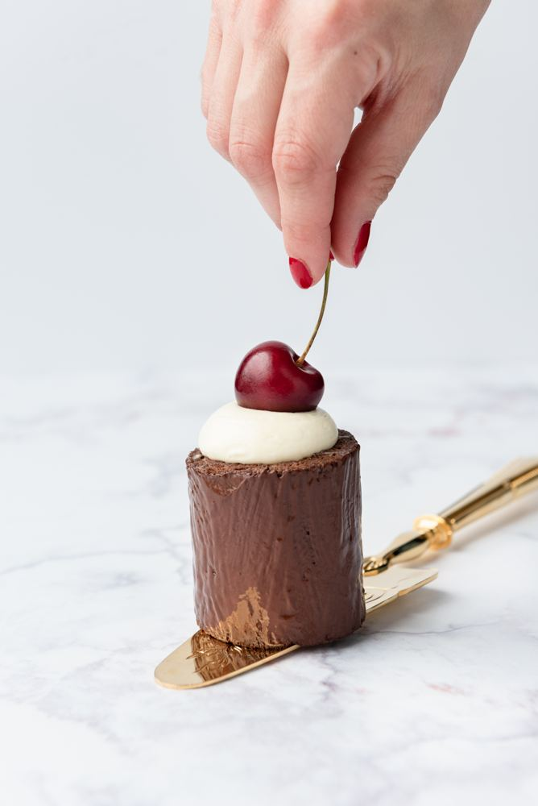

I'm Pascaline, a pastry chef in Montreal
I'm the chef behind La Crème des Bordelaises. From an office at Nestlé to the set of Le Meilleur Pâtissier – Les Professionnels, here is the story of a career change driven by passion, and why today, what I love most is baking with you.

A childhood that smelled of butter and sugar
I grew up with a dad who taught cooking, my mom's cakes and my grandma's apple fritters. At home, the kitchen was the heart of the house: we tasted, we laughed, we learned.
My very first cake on my own? A peach clafoutis, in 2009. I still remember it, and I think that's where it all started.

From marketing to pastry: a career change driven by passion
2009 · The first clafoutis
I teach myself to bake, evenings and weekends, recipe after recipe, while watching Le Meilleur Pâtissier – Les Professionnels.
Food marketing
After a Master's in food marketing, I work for major brands such as Nestlé, Père Dodu, Mamie Nova and Paysan Breton.
2017 · Following my heart
I'm proofing croissants at 4 a.m. before heading off to a full day at the office… It was time to listen to my heart. I change careers and earn my pastry diploma as an independent candidate, with honours (mention Bien).
Training with the best
I perfect my techniques at Quatrième Mur by Philippe Etchebest, at theInterContinental Bordeaux and at Pressoir d'Argent by Gordon Ramsay, as well as with Pierre Mathieu, former chef at the Mandarin Oriental. Pro tips that I now pass on to you.
2018 · La Crème des Bordelaises
I start my pastry workshops in Bordeaux: classes, team building, bachelorette parties… Over 5,000 students since.
2021 · Le Meilleur Pâtissier, and much more
Quarter-finalist on Le Meilleur Pâtissier – Les Professionnels on M6, with 2 special mentions from the jury. That same year, I publish my first recipe book and become a food columnist for Radio France.
2024 · Hello Montreal!
La Crème des Bordelaises crosses the Atlantic: I now run my workshops all over Greater Montreal.
Croissants at 4 a.m.… then the big leap
For years, I led two lives: marketing by day, pastry by night. I proofed my croissants at 4 a.m. before rushing off to the office. In 2017, it was time to follow my heart.
In pastry shops and restaurants, I loved the rigour of the trade. But I quickly realized I didn't want to just make cakes.
What I really love is teaching : seeing someone succeed with their first choux pastry, hearing a team burst out laughing around a cake, showing the little gesture that changes everything.
That's how La Crème des Bordelaiseswas born, in 2018 in Bordeaux, then in Montreal since 2024: workshops where you learn professional techniques, simply and in good spirits.

From the couch to the set of Le Meilleur Pâtissier
I really started baking while watching Le Meilleur Pâtissier – Les Professionnels. So being part of it in 2021, as a professional pastry chef on M6… was a real dream.
I made it to the quarter-finals, with 2 special mentions from the jury : Cyril Lignac, Pierre Hermé and Jean-François Piège.
Quite an adventure!



For me, pastry is about sharing
My promise is simple: you do everything yourselves, and I guide you step by step with my chef's tips. You leave with your creation, and above all with the desire (and the ability!) to make it again.
Whether it's to bring a team together, celebrate a bride-to-be or finally nail your macarons, I come with all the equipment and adapt to you.

🤝 Team building
The Pastry Challenge: your team makes a giant letter cake.
Discover →🎄 Christmas party
The Puzzle Christmas Tree to make together, no kitchen needed.
Discover →🥂 Bachelorette / Shower
A delicious, fun workshop, ideally at your home.
Discover →👩🍳 Class at home
The tailor-made class of your dreams, in your kitchen.
Discover →What they say about our time together
“Besides being adorable, energetic and funny, she is a passionate person who helps you build confidence in yourself and your abilities.”
Laetitia G. · Google review, translated from French
“During this class, I felt like an old friend had come over to teach me a whole bunch of professional pastry techniques. You'd love to be her friend and her student :)”
Violaine · Google review, translated from French
Pastry photo: Sandra Hygonnenc